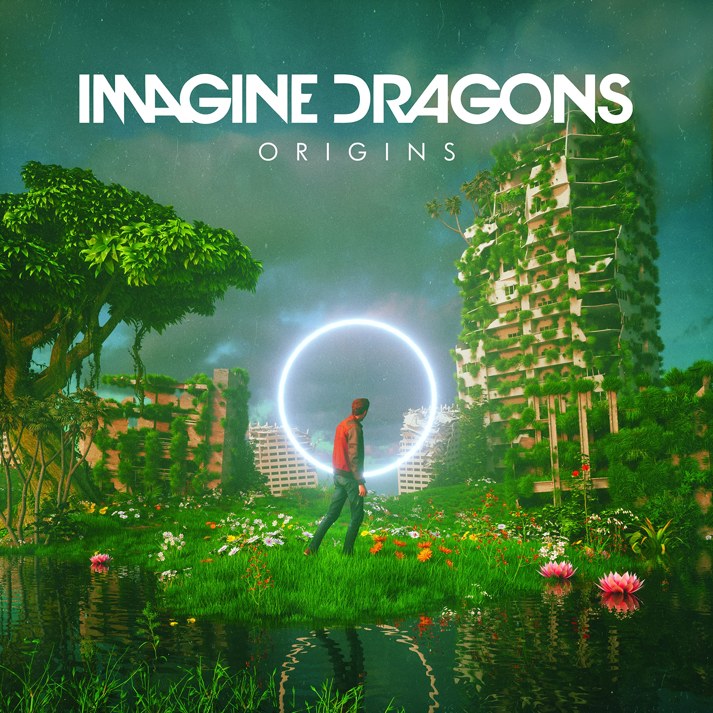
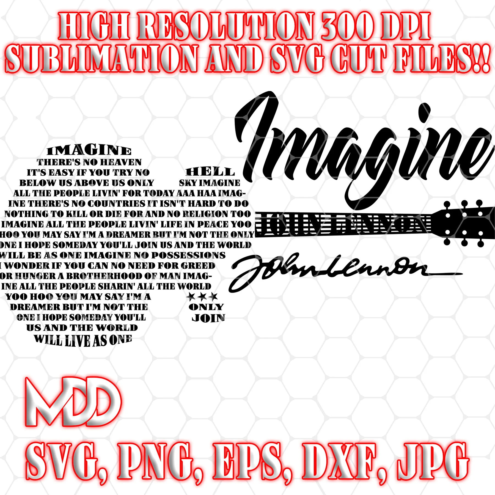

Discografía
Explora todos los álbumes y canciones de Imagine Dragons

Mercury - Acts 1 & 2
2021-2022
Canciones destacadas:
- Enemy
- Bones
- Sharks
- Follow You
- Wrecked
Un álbum doble que explora temas profundos de pérdida, amor y redención. Incluye colaboraciones y experimenta con nuevos sonidos.

Origins
2018
Canciones destacadas:
- Natural
- Zero
- Machine
- Bad Liar
- West Coast
El cuarto álbum de estudio que continúa la evolución musical de la banda con sonidos más experimentales y letras introspectivas.

Evolve
2017
Canciones destacadas:
- Believer
- Thunder
- Whatever It Takes
- Walking the Wire
- Rise Up
Un álbum que marcó la evolución de la banda hacia sonidos más pop y electrónicos, manteniendo su esencia rockera.

Smoke + Mirrors
2015
Canciones destacadas:
- I Bet My Life
- Gold
- Shots
- Dream
- Polaroid
El segundo álbum de estudio que consolidó el sonido único de la banda y exploró temas más oscuros y personales.

Night Visions
2012
Canciones destacadas:
- Radioactive
- It's Time
- Demons
- On Top of the World
- Amsterdam
El álbum debut que catapultó a la banda al estrellato mundial. Incluye "Radioactive", una de las canciones más icónicas de la década.

EPs y Sencillos
2009-2012
Lanzamientos destacados:
- Imagine Dragons EP (2009)
- Hell and Silence EP (2010)
- It's Time EP (2011)
- Continued Silence EP (2012)
Los primeros trabajos de la banda que mostraron su potencial y establecieron las bases de su sonido característico.
Logros Discográficos
Canciones Más Populares
Radioactive
Night Visions (2012)
Believer
Evolve (2017)
Thunder
Evolve (2017)
Demons
Night Visions (2012)
Enemy
Mercury - Act 1 (2021)